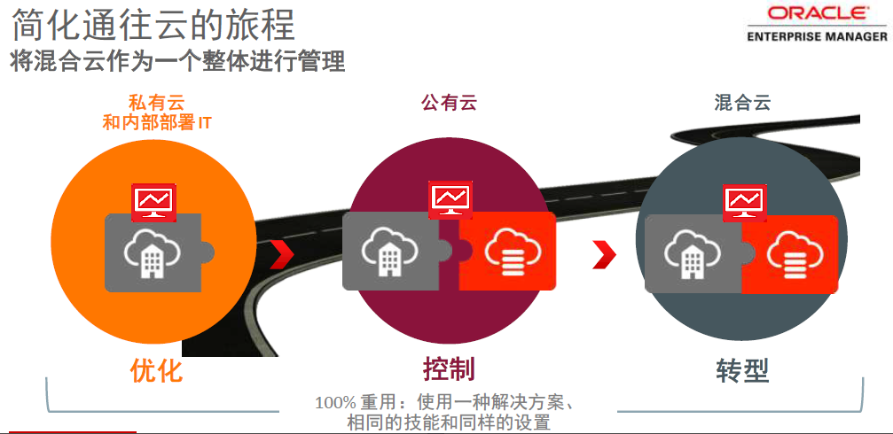
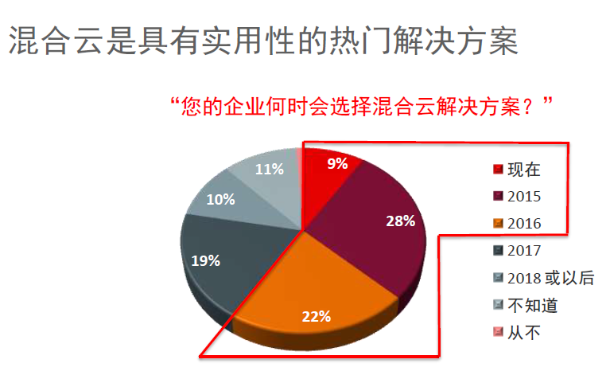
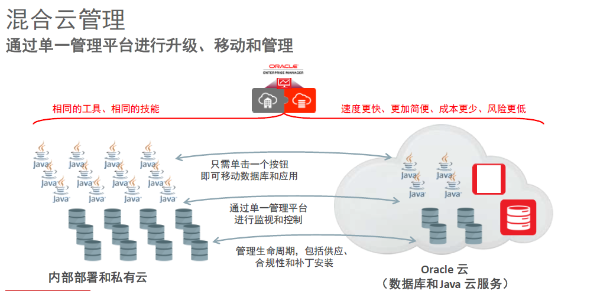

混合云产品
产品介绍
目前企业IT预算超过三分之二仅为维护现有的系统，用户创新的资金和时间大受影响。而作为企业计算主要力量及未来发展趋势的云计算，正在为系统管理带来更多复杂性，促使用户更加快速地去适应。调查预测，近两年内，传统的计算负载将从52%下降到37%，私有云负载将从35%快速上升至47%，公有云则会从12%上升到15%。这意味着未来会有越来越多的应用和工作负载将通过从传统的计算负载迁移到私有云，最后到公有云，这已经成为全世界IT应用的发展趋势。
五大特性
-
甲骨文的企业管理器通过集成的堆栈管理来优化传统环境的应用，通过私有云的部署提供整合自动化配置、自助服务、计量和Chargeback等服务，利用云中计算负载的流动性来实施单一虚拟平台的管理。总体而言，甲骨文企业管理器以五大功能助力企业的混合IT之旅。

-
发现和监测。实现对各种应用、中间件和数据库的实时监测，管理整个数据中心的运行状态。
-
性能管理。帮助用户诊断和调试数据库的运行，优化服务质量，JavaScript的功能也能够帮助用户更好地诊断问题。
-
整合功能。把数据库迁移到像Exadada这样的大型一体机中，用户难免担心应用是否如常。而整合功能提供模拟环境以便查看工作负载状况，确保在迁移之前能够完全良好运作，并根据最佳实践来集中最佳基础架构。
-
标准化和自动化。每个行业都会面临合规的要求。标准化和自动化建立起服务目录，使得客户有能力自己制定合规，在极大减少存储空间的同时，管理配置、补丁、升级、备份和其他类似功能，确保数据库运行在最标准的环境。
-
混合云管理功能。在上述功能的基础上，使用户能够像管理内部部署资产和代理一样管理混合IT资源。

为什么要用“云”
当企业的高管在考虑新的技术应用时如云计算会发出这样的疑问，我们为什么要用云?云计算能够我们带来怎样的价值?事实上，对于企业而言，这是很合理的问题。那么，让我们研究一下企业为什么需要云计算。邹晓兵认为需要三个方面回答。
-
首先，从企业的角度来看，许多的企业已经意识到 IT对其具有非常战略性的作用，它可以帮助企业做战略性的改变比如当企业要进入新兴的市场以及环境，IT可以起到很大支持，但是现大多数的IT的预算花费在业务运营上。
-
其次，从IT角度来看，通常会有三个部门会对IT比较看重。第一，开发人员。他们现在的挑战主要是技术在不断地变化而资源的灵活性反而改变得不是那么快。另一方面，从IT运营方面怎么样让IT运营成本有所下降。
-
第三，从业务角度来看，需要IT更快地支持他们走向市场，怎样减少IT瓶颈能够更快地向市场推出新产品。
实际上，在今天复杂的环境中， 企业CIO所面临的困境就在于怎么样减少IT运营投资，然后利用减少下投资进行IT创新，运用创新来支持企业走向市场的不同的方式。这也是为什么云现在越来越重要的基础。
正是以上因素，使得云计算在企业应用中变得非常的重要，而且市场上已经使用云计算越来越多。据相关统计，全球现在有84%的企业在不同的信息里面采取了云，而在今后两年时间内会有更多的企业把云作为企业业务创新的重要的基础。
从云计算的三大形态(IaaS、PaaS、SaaS)上来看，“现在增长得最快的则是PaaS，有数据表明未来几年其增长率将达到90%，这意味着每年这个比例都是呈双倍增长的，涨速惊人。
来自甲骨文亚太及日本区融合中间件产品管理高级总监李国东同样表示，SaaS服务商不可能把客户精密的要求全部做到，在这个基础上如果做定制化的开发以及整合，那么，PaaS就变得非常重要。
PaaS市场现在应该是增长最快的市场，因为当企业应用SaaS后，还需要用PaaS还为SaaS周边的整合、集成做开发服务。也因此，PaaS在整个Oracle系统中是一个非常重要的位置。是为什么云现在越来越重要的基础。”

Oracle云加速企业创新
在企业成长过程，经常会遇到这样的问题：在企业开创新的市场环境以及业务时往往在需要IT支撑时，从开发到成品交付通常需要很长的时间，严重的影响到企业的创新。那么，当采用了云计算后通常在很短的时间内就可以得到部署应用，从开发的角度来看，可以直接 使用SaaS或者PaaS支持企业支持业务扩展，达到业务创新的高效支持。
作为国际领先的云服务商，Oracle能够提供的“全云”产品帮助企业实现业务创新，简化IT管理，并降低IT成本。“Oracle总体云战略就是要帮助企业客户提供所有云的服务，从最低层的IaaS到中间层的PaaS再到最上层的SaaS甚至更上层的DbaaS，对于企业来说，Oracle可以把整个运行方面的风险和运营成本降低，同时提高运行速度和质量。”
-
首先，以Oracle PaaS为例，相比于其它云服务商所提供的PaaS产品而言，Oracle在PaaS层提供了更多的PaaS服务而不单单是数据库、应用服务器，甚至还有流程的集成等等所有集成的服务,这些服务比原来想象的PaaS提供的服务更精细了。同时，它的另一个优势在于所提供服务都进行了相关的集成。大多数的IT的预算花费在业务运营上。
-
其次，以在不同的私有云、公有云或自己的环境当中自由部署、自由移动。这对现在的云计算开发非常重要，现在有很多的开发人员开发的产品只针对一个公有云或私有云，但因为Oracle有坚强的技术基础，是从原来的技术上发展而来，可以部署在私有云、公有云甚至自有环境，部署完之后可以在所有不同的系统当中自由转换。最常用的是把“开发部署”作为服务，而基础架构数据库、数据库的部分Java的开发工具不再像过去所有的产品都要自己安装和配置，只需要通过云计算，就可以配置好。
-
第三，开放性。Oracle PaaS同时具有强大的开放性，它拥有很多接口并预先设定adapter可以非常快速的与接入第三方云平台。
据了解， Oracle目前已经在云计算中取得了一定的成绩比如Oracle HCM已经拥有六千多个客户跨越两百多个国家！